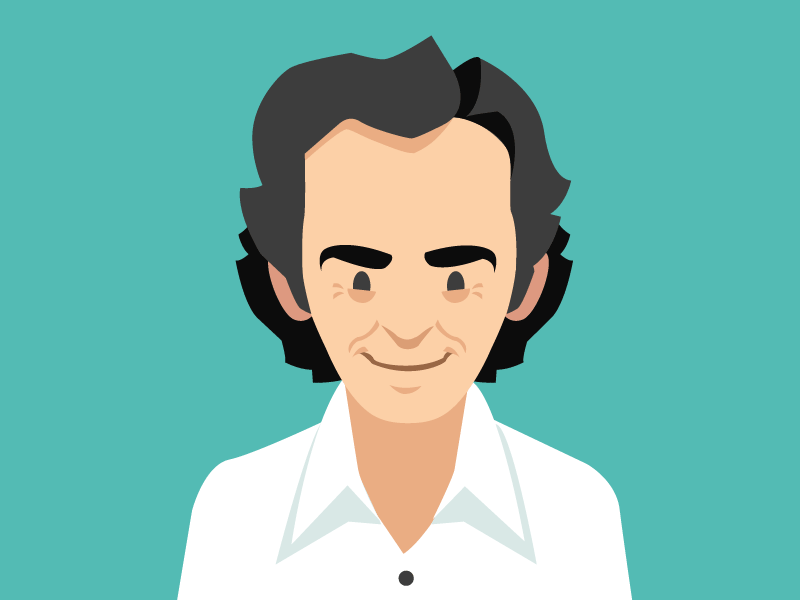
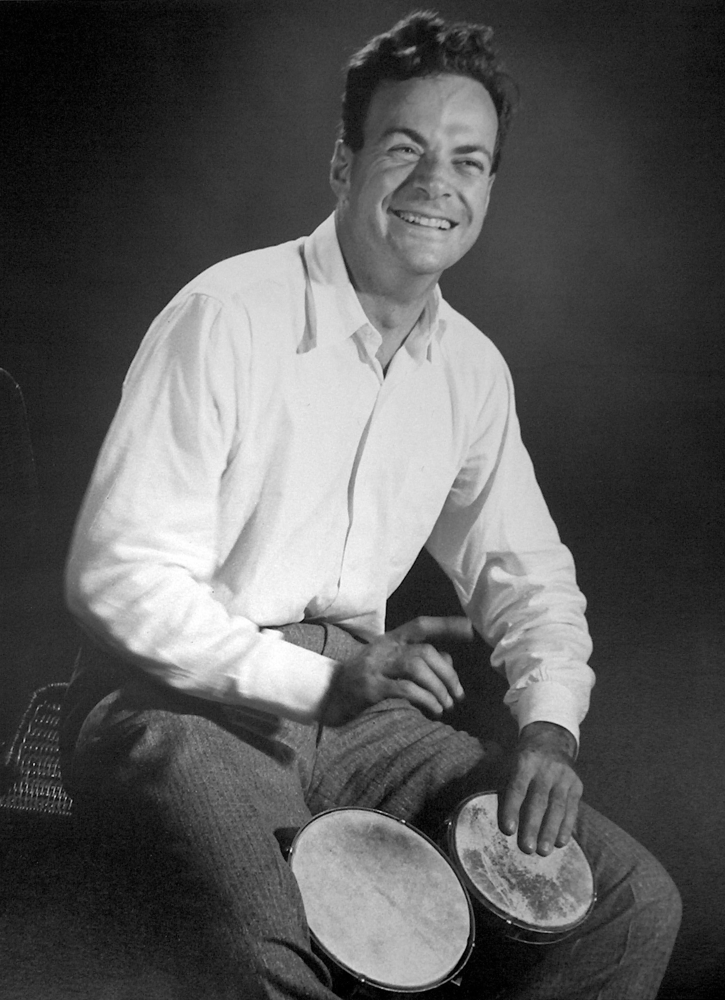

"Science is what we have learned about how to keep from fooling ourselves.”

Dr. Feynman

Dr. Feynman Playing the Bongos!
Dr. Feynman's Life
1918 - Born in Queens, New York City.
Heavily influenced by his father, who encouraged him to ask questions to challenge orthodox thinking.
By age 15, had taught himself mathematics all the way up to calculus.
1939 - received a bachelor's degree at MIT.
1941 - Began working on the Manhattan Project at Los Alamos.
1942 - Received a Ph.D at Princeton University.
1942 - Married to Arline Greenbaum.
1944 - Began working at Cornell as an assistant professor while still at Los Alamos.
1945 - Feynman's wife, Arline, dies of tuberculosis.
1949 - Started working at Caltech.
1952 - Married to Mary Louise Bell.
1954 - Awarded the Albert Einstein Award for his work at Los Alamos.
1960 - Married to Gweneth Howarth.
1961-1963 - Coauthored The Feynman Lectures on Physics alongside Robert Leighton and Matthew Sands to "spruce up" the undergraduate teaching at Caltech.
1965 - Won the Nobel Prize in Physics "for their fundamental work in quantum electrodynamics, with deep-ploughing consequences for the physics of elementary particles".
1972 - Received the Oersted Medal.
1978 - Diagnosed with liposarcoma, a rare form of cancer.
1979 - Received the National Medal of Science.
1983 - The BBC network aired Dr. Feynman's series Fun to Imagine.
1985 - Published Surely You're Joking, Mr. Feynman!
1986 - Participated in the Presidential Rogers Commision Report, an investigation into the Challenger Disaster. Dr. Feynman proved that the disaster was a result of the shuttle boosters O-rings being used outside their operational temperature.
1988 - Published What Do You Care What Other People Think?
February 15th, 1988 - Dr. Feynman died due to kidney failure at UCLA Medical Center, age 69.